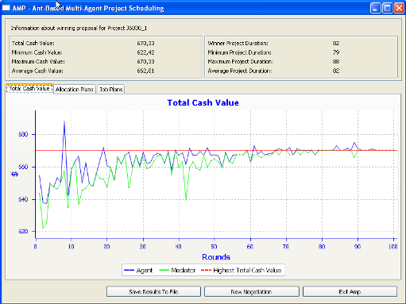

| |
| Home |
| What is AMP ? |
| Problem Description |
| Solution Approach |
| Benchmark |
| Download |
| Documentation |
| Troubleshooting |
| Project Team |
| Imprint |
| Contact |
| Documentation |
The mediator connection screen is the first thing the user sees when starting the application. The screen is showing a list of pre-defined mediators (the actual live server and a local server), buttons to add, edit or remove entries in the list and buttons to close the application or connect to the selected mediator. A click on the or will open a dialog to add or edit an entry. Clicking on will register the agent at the mediator provided. While the mediator is waiting for the mediator to send the list of available projects, the user will be seeing a status window. How to select a project: After successful retrievment of the project list, the user will see the project selection screen. On the left side of the screen the user will see a list of available projects being updated every few seconds. A list item displays the project name and in brackets the number of connected users and maximum number of agents for this project. By clicking one of the buttons at the top the user has the possibility to filter the list:
On the top right corner of the view the user has the ability to setup certain factors of a negotiation:
Right underneath the user can see information about the selected project:
At the bottom right of the screen there are two buttons for navigation:
Negotiation process: After two agents have successfully joined the same project, they will see the negotiation screen. The negotiation screen is divided into 4 areas
Cash value Chart: The cash value chart was implemented using SWTChart. It visualizes the history of the cash value of the negotiation. There are three lines: On the x-axis you have the rounds and on the y-axis the amount of cash. You can zoom in/out by double-clicking on the chart with the left/right mouse button. STATISTICS / INFORMATION: At the top right screen information and statistics about the project can be seen:
RESULT VIEW After succesful completion of a negotiation, the user will see the Result View  On the top of the screen the user will see numerical statistics (cash value and project duration). In the middle, the user has the possibility to take a look at the cash value chart, the allocation plans or the job plans (allocation and job plans can be looked at for each resource itself). At the bottom the user has the possibility to:
Requirements: An up-to-date Java Installation should suffice. If you have problems please visit the Troubleshooting page.
|
Launch Agent Troubleshooting Contact Stuttgart University of Applied Sciences |